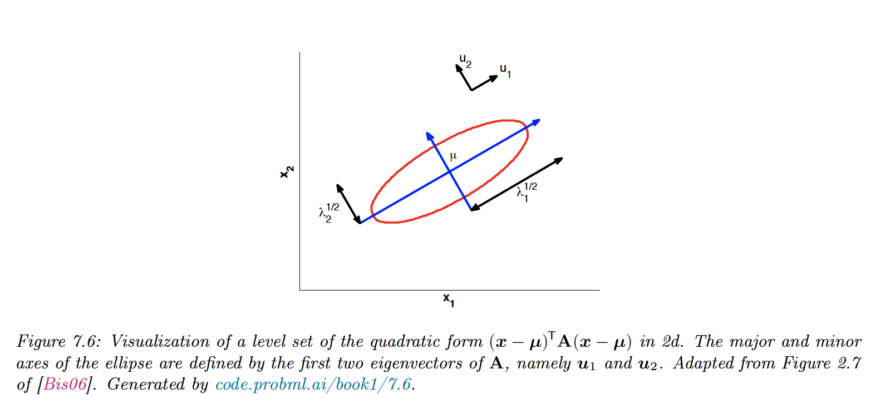
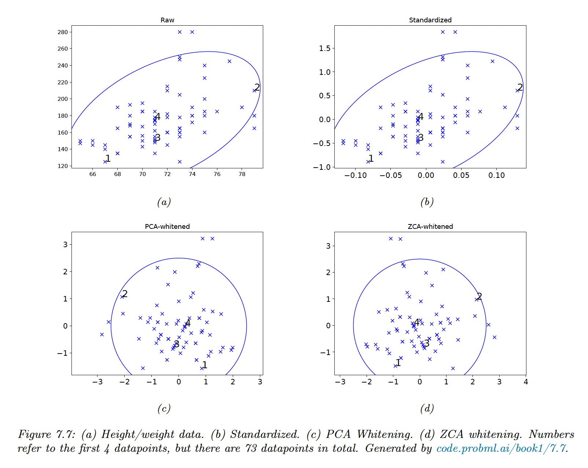

7.4.1 Basics
For a square matrix A ∈ R n × n A\in \mathbb{R}^{n\times n} A ∈ R n × n λ ∈ R \lambda\in\mathbb{R} λ ∈ R A A A
A u = λ u , u ≠ 0 A\bold{u}=\lambda \bold{u},\;\;\bold{u}\neq\bold{0} A u = λ u , u = 0 with u ∈ R n \bold{u}\in \mathbb{R}^n u ∈ R n
Intuitively, multiplying u \bf u u A A A u \bf u u λ . \lambda. λ .
Since c u c\bold{u} c u λ \lambda λ
The equation above gives us:
A u − λ u = ( A − λ I ) u = 0 A\bold{u}-\lambda \bold{u}=(A-\lambda I)\bold{u}=0 A u − λ u = ( A − λ I ) u = 0 Therefore, this has a non-zero solution iff A − λ I A-\lambda I A − λ I
d e t ( A − λ I ) = 0 \mathrm{det}(A-\lambda I)=0 det ( A − λ I ) = 0 Properties:
t r ( A ) = ∑ i = 1 n λ i d e t ( A ) = ∏ i = 1 n λ i \begin{align}
\mathrm{tr}(A)&=\sum_{i=1}^n\lambda_i \\
\mathrm{det}(A)&=\prod_{i=1}^n\lambda_i
\end{align} tr ( A ) det ( A ) = i = 1 ∑ n λ i = i = 1 ∏ n λ i The rank of A A A If A A A 1 / λ i 1/\lambda_i 1/ λ i A − 1 A^{-1} A − 1 A − 1 u i = 1 / λ i u i A^{-1}\bold{u}_i=1/\lambda_i \bold{u}_i A − 1 u i = 1/ λ i u i The eigenvalues of a triangular matrix are just its diagonal entries.
7.4.2 Diagonalization
We can write all eigenvectors equations simultaneously:
with U ∈ R n × , n U\in\mathbb{R}^{n\times, n} U ∈ R n × , n Λ = d i a g ( λ 1 , … , λ n ) \Lambda=\mathrm{diag}(\lambda_1, \dots,\lambda_n) Λ = diag ( λ 1 , … , λ n )
If the eigenvectors are linearly independent, then U U U
A = U Λ U − 1 A=U\Lambda U^{-1} A = U Λ U − 1 A matrix that can be written in this form is called diagonalizable.
7.4.3 Eigenvalues of symmetric matrices
When A A A
u i ⊤ u j = 0 , i ≠ j u i ⊤ u i = 1 \begin{align}
u^\top_i u_j&=0, \;i\neq j \\
u^\top_i u_i&=1 \\
\end{align} u i ⊤ u j u i ⊤ u i = 0 , i = j = 1 So in matrix notation: U ⊤ U = U U ⊤ = I U^\top U=UU^\top=I U ⊤ U = U U ⊤ = I U U U
We can represent A A A
A = U Λ U ⊤ = ∑ i = 1 n λ i u i u i ⊤ A=U\Lambda U^\top=\sum_{i=1}^n\lambda_i \bold{u}_i\bold{u}_i^\top A = U Λ U ⊤ = i = 1 ∑ n λ i u i u i ⊤ Thus multiplying by any symmetrical matrix A A A U U U Λ \Lambda Λ U ⊤ U^\top U ⊤
Since U ⊤ = U − 1 U^\top=U^{-1} U ⊤ = U − 1 A A A
A − 1 = U Λ − 1 U ⊤ = ∑ i = 1 n λ i − 1 u i u i ⊤ A^{-1}=U\Lambda^{-1}U^\top=\sum_{i=1}^n \lambda_i^{-1} \bold{u}_i \bold{u}_i^\top A − 1 = U Λ − 1 U ⊤ = i = 1 ∑ n λ i − 1 u i u i ⊤
7.4.4 Geometry of quadratic forms
A A A ∀ i ∈ { 1 , … , n } , λ i > 0 \forall i \in\{{ 1,\dots,n \}}, \lambda_i>0 ∀ i ∈ { 1 , … , n } , λ i > 0
f ( x ) = x ⊤ A x = x ⊤ U Λ U ⊤ x = y ⊤ Λ y = ∑ i = 1 n λ i y i 2 f(\bold{x})=\bold{x}^\top A\bold{x} =\bold{x}^\top U \Lambda U^\top \bold{x}=\bold{y}^\top \Lambda \bold{y} =\sum_{i=1}^n \lambda_i \bold{y}_i^2 f ( x ) = x ⊤ A x = x ⊤ U Λ U ⊤ x = y ⊤ Λ y = i = 1 ∑ n λ i y i 2 f ( x ) f(\bold{x}) f ( x )
In 2d, we have:
λ 1 y 1 2 + λ 2 y 2 2 = r \lambda_1 y^2_1 +\lambda_2y^2_2=r λ 1 y 1 2 + λ 2 y 2 2 = r 
7.4.5 Standardizing and whitening data
We can standardize X ∈ R N × D X\in\mathbb{R}^{N\times D} X ∈ R N × D whiten the data.
Let Σ = 1 n X ⊤ X = E D E ⊤ \Sigma=\frac{1}{n}X^\top X=EDE^\top Σ = n 1 X ⊤ X = E D E ⊤
We can define the PCA whitening matrix as:
W p c a = D − 1 / 2 E ⊤ W_{pca}=D^{-1/2}E^\top W p c a = D − 1/2 E ⊤ Let y = W p c a x \bold{y}=W_{pca} \bold{x} y = W p c a x
C o v [ y ] = W E [ x x ⊤ ] W ⊤ = W Σ W ⊤ = D — 1 / 2 E ⊤ ( E D E ⊤ ) E D − 1 / 2 = I \mathrm{Cov}[\bold{y}]=WE[\bold{xx}^\top]W^\top=W \Sigma W^\top=D^{—1/2}E^\top (EDE^\top)E D^{-1/2}=I Cov [ y ] = W E [ xx ⊤ ] W ⊤ = W Σ W ⊤ = D —1/2 E ⊤ ( E D E ⊤ ) E D − 1/2 = I The whitening matrix is not unique, since any rotation W = R W p c a W=RW_{pca} W = R W p c a Σ − 1 = W ⊤ W \Sigma^{-1} =W^\top W Σ − 1 = W ⊤ W
For example, with R = E : R=E: R = E :
W z c a = E D − 1 / 2 E ⊤ = Σ − 1 / 2 = V S — 1 V ⊤ W_{zca}=ED^{-1/2}E^\top=\Sigma^{-1/2}=VS^{—1}V^\top W zc a = E D − 1/2 E ⊤ = Σ − 1/2 = V S —1 V ⊤ with, U , S , V U,S,V U , S , V X X X
This is called the Mahalanobis whitening or ZCA (zero-phase component analysis). The advantage of ZCA over PCA is that the resulting matrix is closer to the original matrix —in the least square sense.
When applied to images, the ZCA vectors still look like images.

7.4.6 Power method
This method is useful to compute the distribution of massive transition matrices (like Google PageRank).
Let A A A u i \bold{u}_i u i ∣ λ 1 ∣ > ⋯ ≥ ∣ λ m ∣ ≥ 0 |\lambda_1|>\dots\geq|\lambda_m|\geq0 ∣ λ 1 ∣ > ⋯ ≥ ∣ λ m ∣ ≥ 0
Let v ( o ) v_{(o)} v ( o ) A A A A x = v ( o ) A\bold{x}=v_{(o)} A x = v ( o )
We have:
v 0 = U ( Λ U ⊤ x ) = a 1 u 1 + ⋯ + a m u m v_{0}=U(\Lambda U^\top x)=a_1 \bold{u}_1 +\dots+a_m\bold{u}_m v 0 = U ( Λ U ⊤ x ) = a 1 u 1 + ⋯ + a m u m So by multiplying with A A A
v t ∝ A v t − 1 v_{t}\propto Av_{t-1} v t ∝ A v t − 1 So:
v t ∝ a 1 λ 1 t u 1 + ⋯ + a m λ m t u m = λ 1 t ( a 1 u 1 + ⋯ + a m ( λ m λ 1 ) t u m ) → λ 1 t a 1 u 1 \begin{align}
v_{t}&\propto a_1 \lambda_1^t\bold{u}_1+\dots+a_m\lambda_m^t\bold{u}_m \\
&= \lambda_1^t\big(a_1\bold{u}_1+\dots+a_m(\frac{\lambda_m}{\lambda_1})^t\bold{u}_m\big) \\
&\rightarrow \lambda_1^ta_1 \bold{u}_1
\end{align} v t ∝ a 1 λ 1 t u 1 + ⋯ + a m λ m t u m = λ 1 t ( a 1 u 1 + ⋯ + a m ( λ 1 λ m ) t u m ) → λ 1 t a 1 u 1 To compute λ 1 \lambda_1 λ 1
R ( A , u i ) ≜ u i ⊤ A u i u i ⊤ u i = λ i u i ⊤ u i u i ⊤ u i = λ i R(A,\bold{u}_i)\triangleq\frac{\bold{u}_i^\top A \bold{u}_i}{\bold{u}_i^\top \bold{u}_i}=\frac{\lambda_i\bold{u}^\top_i\bold{u}_i}{\bold{u}_i^\top\bold{u}_i}=\lambda_i R ( A , u i ) ≜ u i ⊤ u i u i ⊤ A u i = u i ⊤ u i λ i u i ⊤ u i = λ i Therefore in our case:
R ( A , v t ) = λ 1 R(A,v_{t})=\lambda_1 R ( A , v t ) = λ 1
7.4.7 Deflation
Suppose we have computed λ 1 \lambda_1 λ 1 λ i \lambda_i λ i
We project out the u 1 \bold{u}_1 u 1 A A A
A ( 2 ) = ( I − u 1 u 1 ⊤ ) A ( 1 ) = A ( 1 ) − λ 1 u 1 u 1 ⊤ A^{(2)}=(I-\bold{u}_1\bold{u}_1^\top)A^{(1)}=A^{(1)}-\lambda_1 \bold{u}_1\bold{u}_1^\top A ( 2 ) = ( I − u 1 u 1 ⊤ ) A ( 1 ) = A ( 1 ) − λ 1 u 1 u 1 ⊤ This is called matrix deflation. We can now run the power method on A ( 2 ) A^{(2)} A ( 2 ) λ 2 \lambda_2 λ 2 u 1 \bold{u}_1 u 1
Deflation can be used to implement PCA, by computing the first K K K
7.4.8 Eigenvectors optimize quadratic forms
Consider the following constrained optimization problem:
max x ∈ R n x ⊤ A x , s u b j e c t t o ∣ ∣ x ∣ ∣ 2 2 = 1 \max_{x\in\mathbb{R}^n}\;\bold{x}^\top A\bold{x}, \;\;\;\mathrm{subject\;to\;}||\bold{x}||^2_2=1 x ∈ R n max x ⊤ A x , subject to ∣∣ x ∣ ∣ 2 2 = 1 for a symmetric matrix A ∈ S n A\in\mathbb{S}^n A ∈ S n
A standard way to solve a constrained optimization problem is by forming the Lagrangian:
L ( x , λ ) = x ⊤ A x + λ ( 1 − x ⊤ x ) \mathcal{L}(\bold{x},\lambda)=\bold{x}^\top A\bold{x}+\lambda(1-\bold{x}^\top \bold{x}) L ( x , λ ) = x ⊤ A x + λ ( 1 − x ⊤ x ) Therefore:
∇ x L ( x , λ ) = 2 A ⊤ x − 2 λ x = 0 \nabla_x\mathcal{L}(\bold{x},\lambda)=2A^\top\bold{x}-2\lambda \bold{x}=0 ∇ x L ( x , λ ) = 2 A ⊤ x − 2 λ x = 0 So the problem is reduced to A x = λ x A\bold{x}=\lambda \bold{x} A x = λ x x ⊤ A x \bold{x}^\top A\bold{x} x ⊤ A x x ⊤ x = 1 \bold{x}^\top\bold{x}=1 x ⊤ x = 1 A A A
{kind=link}
{kind=link}